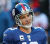

Welcome to my New York-based sports-blog. This is an assignment for class, so please don't bust my chops just yet. Just like the New York Giants' "new-look-offense" this site is a work in progress. I just hope that both my coding skills and the Giants offense (and defense, for that matter) will be clicking on all cylindars sooner rather than later. Either way, like being a New York sports fan, take this site for what it is, a work in progress. I know, I know... 2 Superbowls in the last 5 years, which were some of my fondest memories as a sports fan, so I shouldn't complain. But your wrong. Nothing hurts more than watching the Islanders, Mets and Knicks underachieve year after year. Hey, some could even make the arguement that aside for the New York Football Giants' two recent playoff runs, Eli and his men in blue have underachieved for years, as well. So sue me if I'm bitter. I deserve to me. This site will touch on many subjects, inluding my thoughts on recent TV shows, movies and video games as well as other sports coverage. Since I am not the biggest tennis and golf fan, most of the posts on those subjects will be mostly fictional, or making fun of Tiger Woods in some form or another. Take my advice, if your ever in an elevator with a stranger, instead of small-talking about the weather, ask the person how they feel about good ol' Tiger. EVERYONE has something to say about him.
Aside for the Islanders' impressive first-round playoff series in 2012 against the mighty Pittsburgh Penguins, my sports world has been fairly uneventful. Last season made for another forgetful NHL season for most Islander fans and don't get me started on my beloved New York Mets. I never thought I would ever say this, but I am more excited on what the future holds for these two teams than I am for Phil Jackson's New York Knicks team. Both franchises should have new owners within the next few years and most importantly, more money to spend on free agents. Also, the Islanders and Mets both have some amazing prospects in their farm systems, so I strongly believe that New York sports (and no, we will not be discussing the Rangers or Yankees here) is in for some exciting times ahead. We just have to be patient, which is hard for a New Yorker sometimes!
Of course, a New York-based sports-blog wouldn't be complete without some serious ball-busting, so we will be doing just that on a regular basis. Especially when it comes to shmohawks like Lebron James and God, I mean Kanye West. Speaking of God, if there is a God, why were personalities like this created? To make us question ourselves? To teach our youth the WRONG way to conduct yourself in all persuits of life? Hey, I'll give it to them, they know how to get the general public to pay attention. But that's just about all I will give to them. That, and Lebron is just a beast on the basketball court....most of the time. I've seen Kanye perform in concert twice and even saw him with his boo Kim K. All three of those experiences were less impressive than the last. What can I say? These guys are just easy to poke fun at. Be sure the page that I've dedicated to Lebron and Kanye. You will not regrett it.
Here are a few of my favorite sports-related websites:
Bleacher Report